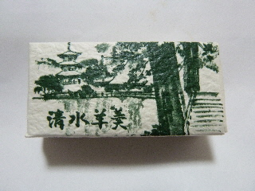
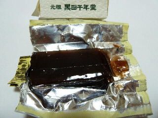

黒田千年堂の清水羊羹
2013/04/02
小さな箱に入った一口羊羹です。

この小ささがなんとも可愛い。
おもちゃのおまけがはいってそう。

これが清水羊羹の元祖なんですね。
元祖ってあると、なんとなくどこかに本家があるんじゃないかと思ってしまいます。
ここの羊羹は固めだけど、砂糖っぽくなく、甘すぎない美味しさでした。
島根県安来市清水町110-1
2013/04/02
小さな箱に入った一口羊羹です。

この小ささがなんとも可愛い。
おもちゃのおまけがはいってそう。

これが清水羊羹の元祖なんですね。
元祖ってあると、なんとなくどこかに本家があるんじゃないかと思ってしまいます。
ここの羊羹は固めだけど、砂糖っぽくなく、甘すぎない美味しさでした。